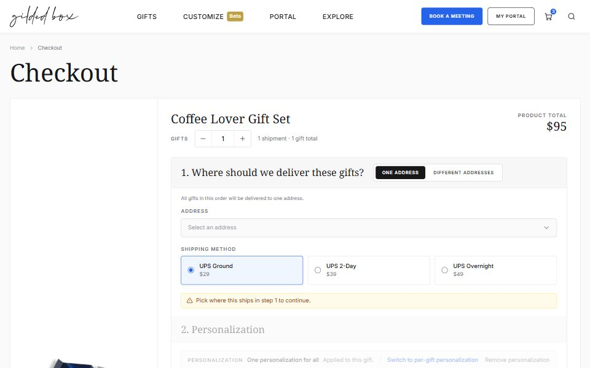
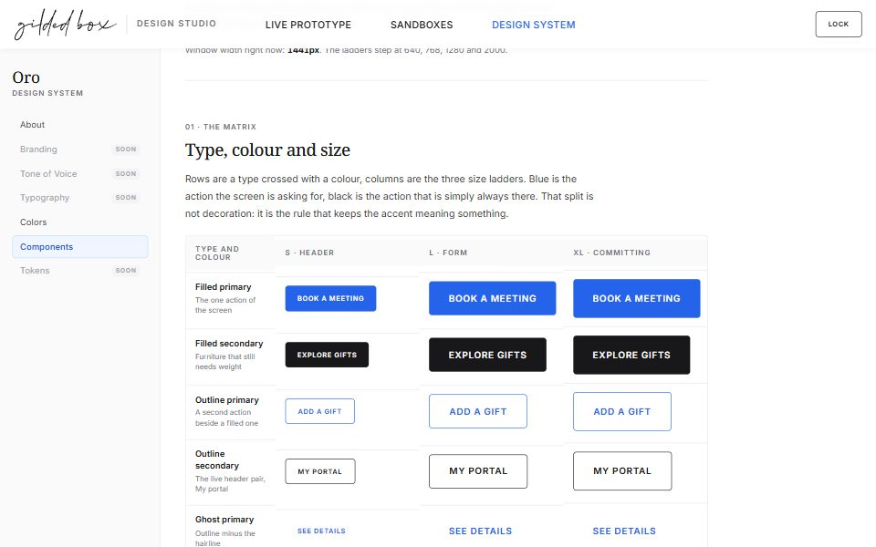

Design Studio
Three ways in: the walk that is approved, the questions that are still open, and the system they are both built out of.
Live Prototype
It opens on the map of the prototype: two trees, the website and the portal, the points where they meet, and a status on every page. One connected walk starts there.

Sandboxes
Parallel rooms, one open question each. A decision still being argued is tried on here first, in a room of its own, and joins the walk once the team has settled it.

Design System
Oro: the tokens, the components and the rules every prototype here is built from. The showcase reads the real files rather than copies, so it shows what the pages wear.